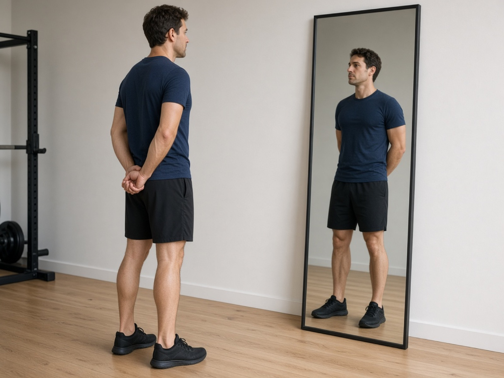
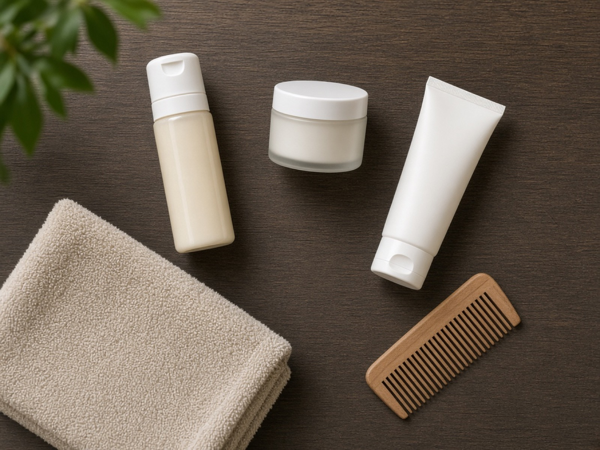

Looksmaxxing for Beginners: What Actually Works?

Looksmaxxing is about improving your appearance through practical, measurable changes. But where should you start?
Should you focus on your jawline, hunter eyes, skin, hairstyle, body composition, or facial symmetry?
If you're new to looksmaxxing, this guide will help you understand what actually matters, how to assess your facial features, and how to build a realistic routine without wasting time on ineffective techniques.
We'll cover softmaxxing, facial aesthetics, skincare, grooming, fitness, and how to track your progress.
What is looksmaxxing?
Looksmaxxing means intentionally improving how you look. Face, hair, skin, body, style. Online communities add slang and rating systems, but the useful core is simple: find your weak points, fix the high-ROI basics first, and track changes over time.
The biggest beginner mistake is obsessing over advanced techniques while ignoring fundamentals. People research mewing angles and bone debates while sleep, skin, grooming, and body composition are still a mess. That order rarely works.
Softmaxxing vs hardmaxxing
- Softmaxxing covers non-surgical habits: sleep, skincare, haircut, grooming, training, nutrition, posture, and style.
- Hardmaxxing refers to medical or surgical routes discussed online. It is not a beginner first step.
If you are starting out, stay in softmaxxing until the basics are consistent for months.
Understanding facial aesthetics
Facial aesthetics is less about one “perfect” feature and more about how features work together. That is why people talk about facial harmony, proportions, and trait-level details instead of a single magic fix.
- Facial harmony: how well eyes, nose, lips, jaw, and midface balance as a set
- PSL scale: a common looksmaxxing rating ladder used to talk about facial attractiveness bands
- Facial analysis: breaking your face into traits you can observe, measure roughly, and improve within realistic limits
What actually makes someone attractive?
No single trait decides everything. In practice, first impressions usually come from a mix of:
- Facial harmony and proportions
- Skin clarity and under-eye quality
- Hair framing the face
- Body composition and posture
- Grooming and clothing fit
That is why a leaner, well-groomed person with average bone structure often photographs better than someone with stronger structure who neglects sleep, skin, and fit.
How to analyze your face for looksmaxxing
Before you chase trends, learn how to read your own face. Take front, side, and 45° photos in plain light. Camera at eye level. No filters. Then review the traits below.
Facial symmetry
Symmetry is how closely the left and right sides mirror each other. Perfect symmetry is rare. Mild asymmetry is normal.
- How to check: draw a mental midline down the nose and compare eye height, brow height, mouth corners, and jaw corners
- What you can improve: reduce puffiness with sleep and lower alcohol, fix head tilt in photos, balance brows and hair parting
For a deeper walkthrough, see Facial Asymmetry: How to Measure Your Face.
Eye area and canthal tilt
The eye area includes lid show, brow support, under-eyes, and canthal tilt (the angle from inner to outer eye corner).
- How to check: zoom a straight-on photo and compare inner vs outer corner height on each eye
- What you can improve: sleep, allergy control, brow grooming, and leaner facial soft tissue. Bone-deep eye shape has limits.
Related guides: What Is Canthal Tilt? and How to Get Hunter Eyes.
Jawline and chin
Jawline definition is heavily affected by facial fat, posture, and lighting. A soft photo does not always mean a soft structure.
- How to check: compare front and side photos. Look at chin projection and the jaw-neck angle.
- What you can improve: healthier body composition, posture, grooming around the jawline, and consistent photo setup
Midface and philtrum
Midface balance and philtrum length affect how compact or elongated the center of the face looks.
- How to check: look at nose-to-lip distance and whether the midface feels long relative to the lower face
- What you can improve: soft tissue and styling can change impression. Structural length has limits. See What Is a Long Philtrum?
Skin quality
Skin is one of the highest visibility traits. Texture, redness, acne, and under-eye darkness change how every other feature reads.
- How to check: use natural light and note active breakouts, scarring, oiliness, dryness, and dark circles
- What you can improve: a simple routine, sunscreen, sleep, and targeted care. Persistent issues may need a clinician.

Turn your facial analysis into a plan
Understanding your features is the first step. Knowing which areas to focus on is what makes the process actionable. iMog helps you analyze your facial features, explore your Attractiveness Score, and identify areas to work on.
Instead of randomly following every looksmaxxing trend, start with a clearer picture of your own face.
Analyze your face with iMogBuild your looksmaxxing routine
Once you know your weak points, build a routine around fundamentals. Keep it boring and consistent.
Sleep
Sleep affects under-eyes, facial puffiness, skin recovery, training, and willpower. Aim for a consistent schedule and enough total hours for you to feel recovered. If sleep is broken, fix that before buying more products.
Fitness and nutrition
Resistance training can support overall fitness, posture, and body composition. A simple beginner program done 3 to 4 times per week beats a perfect plan you never follow.
Nutrition should support a healthy body composition, not extreme cutting for a sharper selfie. Prioritize protein, reduce ultra-processed junk, and drink enough water. If you need to lose fat, use a mild deficit. If you are underweight, use a mild surplus. Face shape changes are individual and should not push unsafe dieting.

Skincare
Start with three steps most days:
- Gentle cleanser
- Moisturizer
- Broad-spectrum sunscreen during the day
The American Academy of Dermatology recommends regular sunscreen use as a core skin-protection habit. Keep the routine simple for at least a month before adding actives. If acne or irritation persists, see a dermatologist instead of stacking random products.

Hair, grooming, and style
- Get a haircut that fits your face shape and maintain it every few weeks
- Clean up brows, facial hair, nails, nose hair, and teeth basics
- Choose clothes that fit your shoulders and proportions. Fit matters more than logos.
What should you improve first?
Prioritize your weakest high-visibility features, not the trendiest ones.
- Sleep and skin if your face looks tired or inflamed
- Body composition and posture if softness is hiding structure
- Haircut and grooming for fast presentation gains
- Style fit so the whole package matches the face work
- Niche aesthetics (eye shape lore, advanced mewing talk) only after the basics hold
Avoid unnecessary changes. Not every trait needs intervention. Some differences are normal variation. The goal is a clearer face and better habits, not endless self-surveillance.
How to track your looksmaxxing progress
- Keep baseline photos with the same distance, angle, and lighting
- Review every 2 to 4 weeks, not every mirror moment
- Write down the top 2 or 3 weak points you are actually training
- If you use iMog, rescan under similar conditions and compare trait trends

Common looksmaxxing mistakes
- Unrealistic expectations: genetics set a range. Habits move you inside that range.
- Misinformation: forums mix useful tips with absolute claims. Cross-check health advice.
- Overanalyzing: measuring every millimeter daily creates anxiety faster than progress.
- Skipping fundamentals: advanced talk cannot replace sleep, skin, and fit.
- App hopping: different rating tools use different scales. Pick one system for tracking.
Realistic looksmaxxing timeline
Progress varies by starting point, consistency, age, and which traits you are changing. Use this as a rough map, not a guarantee.
- First 2 weeks: sleep, grooming, and haircut can show quickly
- First 3 months: skincare consistency and training habits usually become visible if you stuck with them
- 6 months and beyond: body composition and presentation compound. Before/after photos are the honest check.
Frequently asked questions about looksmaxxing
How long does it take to looksmax?
Some presentation changes show in days. Skin and body composition usually need weeks to months. There is no fixed finish line. Track trends under consistent photo conditions.
Can you looksmax naturally?
Yes. Softmaxxing is natural looksmaxxing: sleep, training, nutrition, skincare, grooming, posture, and style. That is where beginners should spend most of their effort.
What is the difference between softmaxxing and hardmaxxing?
Softmaxxing is habit and presentation based. Hardmaxxing refers to medical or surgical options. Learn the difference, then stay in softmaxxing until fundamentals are solid.
Does looksmaxxing actually work?
It works when you change things that are both visible and controllable. Clearer skin, better sleep, improved fit, and healthier body composition change how people read your face. It does not rewrite every genetic trait.
What should beginners focus on first?
Sleep, skin, haircut, grooming, training consistency, and clothing fit. Analyze your face so you know your weak points, then run a short routine for those points instead of chasing every trend.
How can I analyze my facial features?
Use straight-on and side photos, review symmetry, eye area, jawline, midface, philtrum, and skin, then decide what is actionable. A structured scan in iMog can speed this up with an Attractiveness Score and trait breakdown.
Start this week
- Take honest before photos
- Analyze your face and note your top weak points
- Lock sleep and a simple skincare routine
- Book a proper haircut and clean up grooming
- Train a few times this week and keep protein consistent
Looksmaxxing gets results when it becomes a system. Learn your face, pick the right priorities, and track progress without the noise.
Start with a clearer picture of your face
Use iMog to explore your Attractiveness Score, trait breakdown, and a short plan built around your weak points.
Get the app